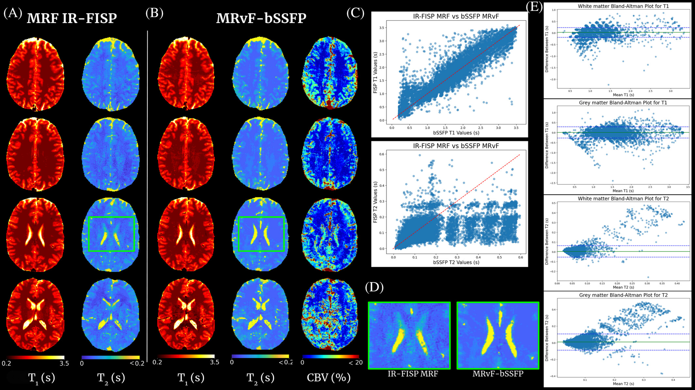
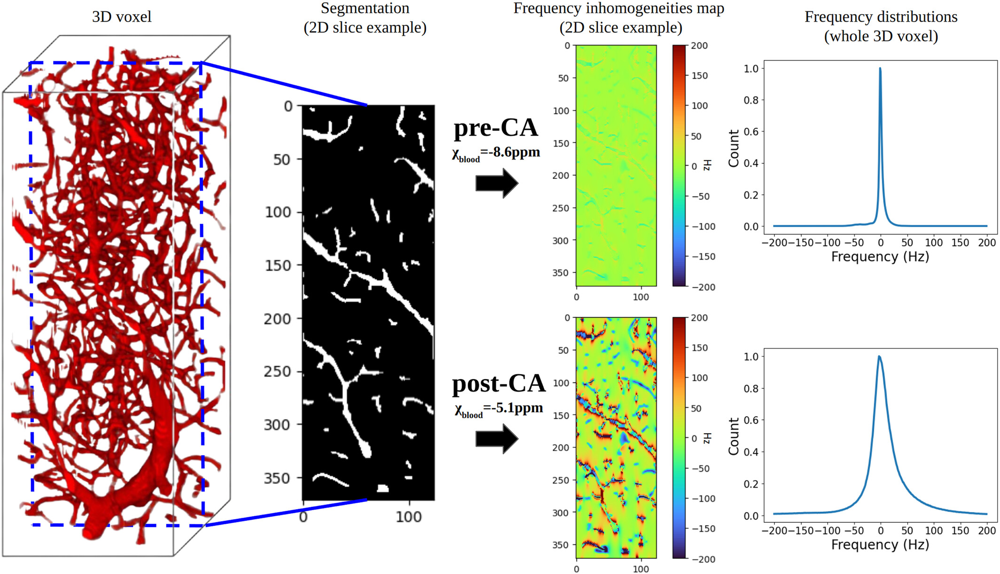
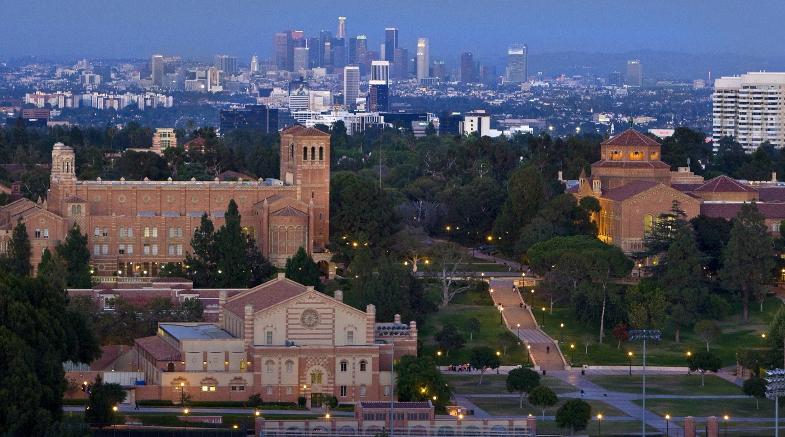
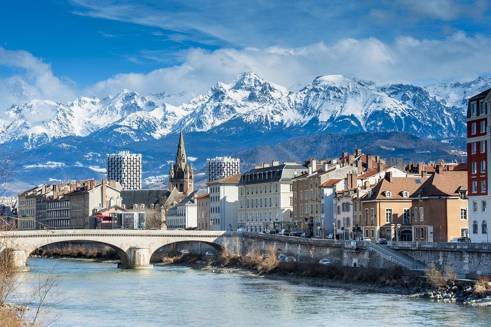

Projects
Dynamic myocardial blood volume mapping with MR Multitasking
This project focuses on developing a fully motion-resolved framework for quantifying myocardial fractional blood volume (fMBV) using MR Multitasking in conjunction with ferumoxytol, an intravascular contrast agent. The Multitasking acquisition produces a highly undersampled dataset that is reconstructed through a low-rank subspace model, yielding separate dimensions for cardiac motion, respiratory motion, and contrast-driven T1 dynamics. Within this latent space, motion-resolved T1 maps are generated across the entire cardiac cycle and across multiple ferumoxytol doses. Subsequently, a compartmental model is fitted to the multi-dose T1 evolution to estimate fMBV and associated water-exchange parameters.
Central to this work are the stabilization of cross-dose and cross-phase alignment of data within the subspace, and the construction of a pipeline capable of producing dynamic, physiologically interpretable fMBV maps without reliance on ECG gating or breath-holding. This framework aims to improve the characterization of myocardial microvascular function and provide a more robust approach to contrast-enhanced quantitative cardiac MRI.

Contrast-free multi-quantitative MRI with MR Fingerprinting
The concept of MRF proposes to reconstruct images by directly comparing in vivo acquisitions and millions of digital simulations that mimic brain tissue (dictionary). This approach is flexible enough to allow access to several MRI parameters simultaneously and to quantify them. As shown in clinical and preclinical studies, when the simulations are based on the physics of NMR (magnetic field, magnetic susceptibility, diffusion, relaxations, etc.) and on biophysics (cellular dimensions and vascular, flow ...), the technique allows the extraction of information on tissue microstructures.
This project is centered on the development of a contrast-free MR Fingerprinting (MRF) framework for rapid, multidimensional quantitative brain imaging in the context of cerebrovascular diseases. The method relies on matching measured MRF signal evolutions to a comprehensive dictionary of simulations that incorporate detailed NMR physics—including relaxation as well as realistic microvascular and cellular architectural features. By generating high-fidelity digital phantoms of brain tissue and accelerating large-scale reconstruction through advanced dictionary compression or physics-informed neural networks, the project enabled the extraction of relaxation, perfusion, and oxygenation biomarkers without the need for exogenous contrast agents.
This framework targets quantitative biomarkers for acute stroke and other neurovascular diseases by linking the MRF signal evolution to underlying tissue microstructure and hemodynamics.

MR-WAVES: MR simulations from 3D realistic microvascular networks using recurrent neural networks and histogram-based approximation
MR-WAVES is a computational framework designed to replace traditional Monte-Carlo spin-dynamics simulations with a recurrent neural network model capable of predicting MR signal evolutions in realistic three-dimensional microvascular geometries. Conventional simulations, while accurate, are computationally intensive and limit the exploration of diverse sequence designs or microvascular configurations. MR-WAVES leverages simulated datasets to train an RNN that learns the temporal evolution of magnetization under varying gradient waveforms, structural geometries, and biophysical conditions. Once trained, the model provides rapid and highly scalable signal predictions, enabling efficient sequence optimization and facilitating large-scale studies on how microvascular architecture influences measurable MRI contrast.

Publications
Selected Publications
-
2026
Scalable magnetic resonance fingerprinting: Incremental inference of high dimensional elliptical mixtures from large data volumes (DOI)
Annals of Applied Statistics
-
2025
Fast MR signal simulations of microvascular and diffusion contributions using histogram-based approximation and recurrent neural networks (DOI)
Magnetic Resonance in Medicine
-
2025
MR Fingerprinting for Imaging Brain Hemodynamics and Oxygenation (DOI)
Journal of Magnetic Resonance Imaging
-
2025
Relaxometry and contrast-free cerebral microvascular quantification using balanced Steady-State Free Precession MR Fingerprinting (DOI)
Magnetic Resonance in Medicine
-
2024
Enhancing MR vascular Fingerprinting with realistic microvascular geometries (DOI)
Imaging Neuroscience
-
2024
MARVEL: MR Fingerprinting with Additional micRoVascular Estimates using Bidirectional LSTMs (DOI)
MICCAI 2024 – Lecture Notes in Computer Science, vol 15002, Springer
Selected Conference Papers
-
2026
Dynamic Fractional Myocardial Blood Volume Mapping Using Ferumoxytol-Enhanced MR Multitasking (Proceeding)
SCMR, Rio de Janeiro
Early Career Award -
2025
Advanced MR vascular Fingerprinting
ISMRM, Honolulu (Oral)
Summa Cum Laude Merit Award -
2025
MR-WAVES: MR simulations from 3D realistic microvascular networks in a few seconds
ISMRM, Honolulu (Poster)
-
2025
Robust Subspace Clustering Approach for High-Dimensional MRF: Novel Simultaneous Clustering and Dimensionality Reduction at Scale
ISMRM, Honolulu (Poster)
-
2025
Cluster Globally, Reduce Locally: Scalable Efficient Dictionary Compression for Magnetic Resonance Fingerprinting (DOI)
ISBI IEEE 2025
-
2024
Contrast-free Blood Volume, Microvascular Properties and Relaxometry mapping using bSSFP MR Fingerprinting
ISMRM, Singapore (Power Pitch oral)
-
2023
MR Vascular Fingerprinting with 3D realistic blood vessel structures and machine learning to assess oxygenation changes in human volunteers
ISMRM, Toronto (Poster)
-
2022
Searching for an MR Fingerprinting sequence to measure brain oxygenation without contrast agent
ISMRM, London (Poster)
Resume
Experience
Postdoctoral Scholar – David Geffen School of Medicine at UCLA
2025 – presentCardiovascular Imaging Research Lab (CVIRL), Los Angeles, California.
Research Engineer – Grenoble Institute Neurosciences (GIN), INSERM
2024MR simulations and MRI reconstruction framework developments.
PhD in Physics for Life Sciences – Grenoble Institute Neurosciences (GIN), INSERM
2021 – 2024MRI « fingerprinting » and Artificial Intelligence for the management of acute stroke patients.
Master Internship – Grenoble Institute Neurosciences (GIN), INSERM
2021Research internship in quantitative MRI and machine learning methods at GIN.
Master Internship – R&D Engineer at Pixyl Medical, France
2021Participation in the R&D development of the start-up Pixyl Medical. Deep-learning-based segmentation of multiple sclerosis lesions in brain MRI.
Deep learning and machine learning project with CEA Grenoble, France
2020 – 2021Collaborative project to develop a predictive model of J.H. Conway's Game of Life for biomedical purposes.
Education
PhD in Physics for Life Sciences – Grenoble Institute Neurosciences (GIN), INSERM
2021 – 2024MRI « fingerprinting » and Artificial Intelligence for the management of acute stroke patients.
Master in Engineering – Grenoble-INP Phelma
2018 – 20213rd year: Biomedical Imaging. 2nd year: Biomedical Engineering. 1st year: Physics, Electronics, Telecom.
Machine Learning and Deep Learning courses
2020Andrew Ng lectures, Stanford (Coursera certifications).
Preparatory Class – La Prépa des INP Grenoble
2016 – 2018Two years of intensive scientific courses to prepare for Engineering School.
Teaching Experience
Undergraduate student supervision – Computer Sciences
2025Project: k-space inpainting with Denoising Diffusion Probabilistic Models.
Graduate student supervision – Medical Imaging
2025Project: Advanced cardiovascular MR reconstruction.
3-month undergraduate student supervision – Biomedical Engineering
2024Project: Automated optimisation of MR vascular Fingerprinting bSSFP sequences.
Course: Introduction to Python
2022Grenoble National Polytechnic Institute – Preparatory class.
Practical class supervision: Introduction to PCR method
2022Grenoble National Polytechnic Institute – Preparatory class.
Practical session: Synthetic MRI Contrast Generation
2022AI4Health Winter School – January 14th, 2022.
Awards, Skills & More
Awards
SCMR 2026 Early Career Award.
IDRE 2025–2026 Fellowship.
ISMRM 2025 Perfusion Study Group 1st Place Award, Contrast Enhanced Category (Primary Author).
ISMRM 2025 Summa Cum Laude Merit Award (Co-primary author).
ISMRM 2025 Magna Cum Laude Merit Award (Author).
Certifications
2025 – IDEA Sequence Programming, Siemens Healthineers.
2025 – Fundamentals of Accelerated Computing with CUDA Python, NVIDIA.
Memberships & Service
2025–2026 – Fellow, Institute for Digital Research and Education (IDRE).
Scientific junior committee – French Conference on AI in Biomedical Imaging (IABM 2023/2024).
Member – ISMRM and SCMR.
Board Member – NeuroDocs, Grenoble Institute Neurosciences.
Journal reviewer – Imaging Neuroscience.
Workshop organizer – AI4Health Winter School 2022 by Health Data Hub.
Computer Skills
Programming: Python, MATLAB, HTML.
Software: Microsoft Office; version control with GitHub and GitLab; ImageJ, ITK-SNAP.
Operating systems: Linux, Ubuntu, Windows.
Languages
French (native). English (C1 BULATS). German (B2). Italian (B1).
More about me
 "To understand me, start at slice 47."
"To understand me, start at slice 47."
I am a Postdoctoral Researcher working at the David Geffen School of Medicine at UCLA in Los Angeles, California, in the Cardio Vascular Imaging Research Lab.

I pursued my PhD research at the Grenoble Institut Neurosciences in France, in the Functional Neuroimaging and Brain Perfusion research team directed by Dr. Benjamin Lemasson and Dr. Thomas Christen, supervised by Pr. Emmanuel Barbier.

Before my thesis, I worked as an intern under the supervision of Michel Dojat and Florence Forbes on Transfer Learning for automatic segmentation of radiation-induced brain lesions in glioblastoma patients in the case where the dataset contains a limited number of annotated MRIs. This work also enabled me to work closely with the start-up Pixyl, in the research and development of their AI tools for MS lesion segmentation.
Outside of work, I practice sports such as Brazilian jiu-jitsu (BJJ) and basketball. I like to go beyond my limits and renew myself in what I do. I find these notions in contact sports and satisfy my taste for teamwork through basketball. I'm also a fan of science fiction novels which I've been reading more and more recently. Finally, I love spending time with family, friends, or colleagues, having a drink, or enjoying an outdoor activity.
Contact
tcoudert@mednet.ucla.edu
Location
Los Angeles, CA, USA